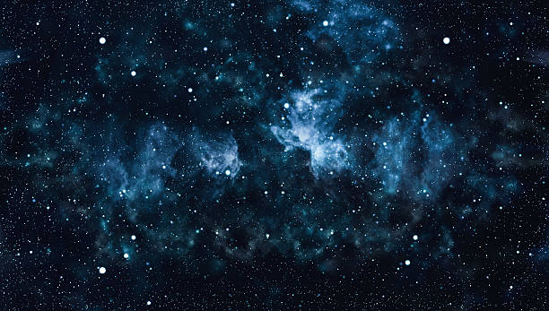

Galaxies
الكون بانتظارك
Milky Way
- مجرتنا التي نعيش فيها
- تحتوي على أكثر من100 مليار نجم
- قطرها حوالي 100,000 سنة ضوئية

Andromeda
- أقرب مجرة كبيرة الى درب التبانة
- تبعد حوالي 2,5 مليون سنة ضوئية
- يتوقع أن تصطدم مع مجرتنا بعد 4مليارات سنة

phenomena
نافدة على الفضاء اللامتناهي
Nebulae
- عبارة عن غيوم ضخمة من الغاز والغبار في الفضاء
- تعتبر"حاضنات النجوم" حيث تولد النجوم الجديدة
- (Orion Nebula)أجملها سديم الجبار

Meteors
- حطام صخري أو معدني يدخل الغلاف الجوي للأرض
- يحترق بسبب السرعة و الاحتكاك مسببا"الشهب"
- بعض النيازك الكبيرة تصل الى سطح الأرض وتسمى"نيازك ساقطة"

Black Holes
- مناطق ذات جاذبية هائلة لا يفلت منها حتى الضوء
- تتكون عند موت نجم ضخم وانهيارهعلى نفسه
- أكبرها يسمى "الثقب الأسود الهائل" يوجد في مراكز المجرات